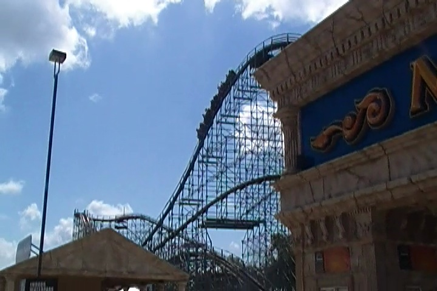
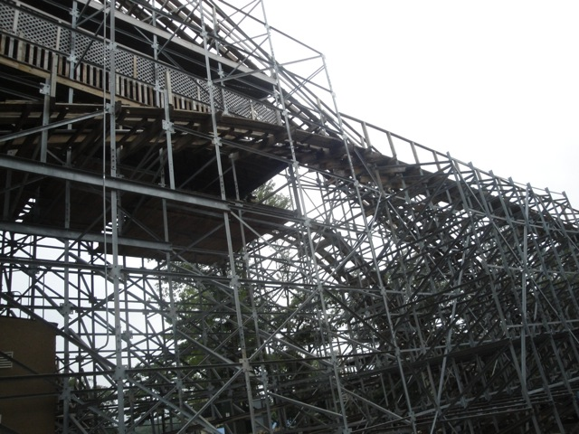
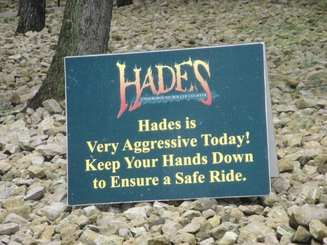

| |
Hades 360 Review

WARNING: THIS REVIEW IS OF HADES BEFORE ITS HADES 360 MODIFICATION!!!! Today, we'll be heading over to Mt. Olympus, where we'll be reviewing Hades. While this isn't my favorite coaster in the park, this is the ride that you can tell that the park is milking. Its big. Its fast. Its huge, and it towers above the parking lot waiting to intimidate guests that go to the park. You can tell that this is the parks most treasured possesion. So after getting here first thing in the morning when the park opens (if you don't, be prepared to wait forever for this ride), we pull down the lap bars, buckle the seatbelt and now we're off!!! Now before we do anything, we go down a small drop that leads us straight to the pre lift section. And surprisingly, this small little drop has some bite to it. It picks up more speed than I expected and is just a lot of fun. You then go through a tight turn that actually provides us with some decent laterals before rising up into a small airtime hill. Damn, are you sure this isn't the actual ride itself. We go down another small drop before going through another big curve. We get some nice laterals before going through a tiny little airtime hill that actually gives us a decent pop before going through another tight turn. We rise up as we go through this hill. This turns out to be the lifthill as we now start to climb the lifthill. That pre-lift is seriously awesome. If I ever do a Top 10 Pre-Lifts List, Hades would have a good chance of grabbing the #1 spot. So anyways, after quite a bit of climbing, we reach the top of the lifthill. We are ready to drop. Down we go. Straight towards the ground. And we pick up a lot of speed. Seriously, we are flying down this drop. Though the bad news is that we're also shuffling as well. This ride is getting really rough as well. We then dive straight into blackness. We're now in tunnel #1. And I'll just say this right now. This tunnel kicks some major ass. We may be jackhammering due to all the roughness, but we're also getting some crazy laterals and though we can't see anything, we can tell that we are 90 degrees at one point in there. Now that is some serious talent considering how on most rides you can only tell because of the visuals. I don't care that its rough as hell (no pun intended), this tunnel is freaking awesome. After that tunnel of awesomeness and we pop out on the other side of the parking lot, we rise up a big hill. And sadly, this part of the ride is not fun. We lose all of our speed and holy crap, it is getting rough over here. We then go down a spiral drop, which while does provide us with some good speed, does not recover the awesome pace the first drop gave us. We then go over another hill. There's no airtime at all, but man is there a lot of jackhammering and roughness. Good news though. We have another tunnel to go through. We dive back into the darkness and get more crazy laterals and another 90 degree session. Seriously, if I ever do a Top 10 Tunnels List, Hades might just win the #1 spot. We then rise out of the tunnel and into an airtimeless hill, though it is cool that its in the structure. I just wish that this jackhammering would stop. We then rise up another small hill, before twisting down and getting more laterals. We just rip through these turns, getting some crazy laterals as we zig zag through this mess. We then twist up one last hill until we reach the final brakes. I think my biggest problem with Hades is that it could be so much better. If Mt. Olympus did some serious work on it during the off season (that'll happen when pigs fly), I could see this thing rising up to being one of my favorite coasters of all time. Its just so frustrating to see a ride that looks so good be so rough and uncared for. The saddest part is that Mt. Olympus gave Hades this big makeover, giving it Timberliners (or I should say a Timberliner, because they NEVER run multiple trains) and gave it an inline twist. But the reviews I've seen of Hades 360 are just HORRENDOUS!!! Somehow, its even worse as I've heard people call this Gouderix bad. Scary stuff. But despite this, I still thought Hades (back in 2010 at least) was good coaster. It may be really rough, but it is a lot of fun. Its fast, its unique, and it has one of my favorite pre-lifts as well as one of my favorite tunnels of all time. I'd definetly give it a ride if you're at Mt. Olympus as long as you get here for opening. It may be rough as hell, but its still a fun coaster and my 2nd favorite coaster in the park. God, I really hope Hades hasn't gotten as bad as people say it has. ='(
7/10 (Pre-Hades 360)
Location: Mt. Olympus
Hades Opened in 2005
Hades was remodeled into Hades 360 in 2013
Built by: The Gravity Group
Last Ridden: August 14, 2010
Hades Photos





|